Home › Items
 Clothing and accessories Live
Clothing and accessories Live
Career outfits, hats, gloves, shoes, bags and fashion items from the shop — where to get them, examples with icons
Clothing gives defense and stats (see Character stats) · equipping, removing and repairing is on Equipment and repair Career outfits are sewn at a Tailoring Workbench · many fashion items come from packs/random boxes in the shop (Market and Shop)
Beginner outfits
Leaf, hide and first cloth outfits · 19 obtainable
| Name | Max level | Where from | |
|---|---|---|---|
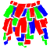 | Money Bouquet Outfit | 30 | Craft (hands) |
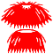 | Straw Outfit | 30 | Craft (hands) |
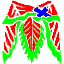 | Leaf Outfit | 30 | Craft (hands) |
| Bark Outfit | 30 | Craft (Workbench) | |
| Modified Technician Outfit | 35 | Craft (Workbench) | |
| Modified Homemaker Outfit | 35 | Craft (Workbench) | |
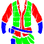 | Modified Suit | 35 | Craft (Workbench) |
| Bark Armor | 35 | Craft (Workbench) | |
| Modified Uniform | 35 | Craft (Workbench) | |
| Jasmine Dress | 60 | Craft (hands) | |
| F/W Soryebok | 60 | Shop (pack) | |
| Jasmine Lei | 60 | Craft (hands) |
Explorer outfits
9 obtainable
| Name | Max level | Where from | |
|---|---|---|---|
| Flax Collection Outfit | 35 | Craft (Workbench) | |
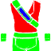 | Lightweight Collection Outfit | 40 | Craft (Workbench) |
| Loose Exploration Outfit | 45 | Craft (Workbench) | |
| Investigator Outfit | 55 | Craft (Workbench) | |
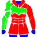 | Spiky Armor | 55 | Craft (Workbench) |
| Advanced Miner Outfit | 60 | Craft (Tailoring Workbench) | |
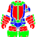 | Volcanic Storm Miner Outfit | 60 | Craft (Tailoring Workbench) |
| Investigator Outfit II | 60 | Craft (Tailoring Workbench) | |
| Ace Explorer Outfit | 60 | Craft (Tailoring Workbench) |
Hunter outfits
14 obtainable
| Name | Max level | Where from | |
|---|---|---|---|
| Cold Protection Combat Outfit | 40 | Craft (Workbench) | |
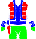 | Hunting Clothes | 45 | Craft (Workbench) |
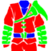 | Formal Bone Armor | 50 | Craft (Workbench) |
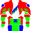 | Fur Shoulder Outfit | 55 | Craft (Workbench) |
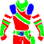 | Feathered Hunting Outfit | 55 | Craft (Workbench) |
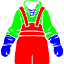 | Swamp Waders | 55 | Craft (Workbench) |
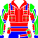 | Melee Combat Outfit II | 60 | Craft (Tailoring Workbench) |
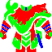 | Advanced Tracker Outfit | 60 | Craft (Tailoring Workbench) |
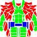 | Camo Sniper Outfit | 60 | Craft (Tailoring Workbench) |
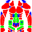 | Combative Search Outfit | 60 | Craft (Tailoring Workbench) |
| Executioner Outfit | 60 | Craft (Tailoring Workbench) | |
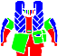 | Motorcycle Gear | 60 | Craft (Tailoring Workbench) |
Settler outfits
15 obtainable
| Name | Max level | Where from | |
|---|---|---|---|
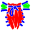 | Casual Outfit | 30 | Craft (Workbench) |
| Dignified Apron | 35 | Craft (Workbench) | |
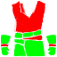 | Light Work Clothes | 40 | Craft (Workbench) |
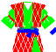 | Elegant Work Clothes | 50 | Craft (Workbench) |
| Work Clothes with Armband | 55 | Craft (Workbench) | |
| Flower Garden Dress | 55 | Craft (Workbench) | |
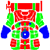 | Heavy Construction Suit | 60 | Craft (Tailoring Workbench) |
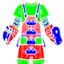 | Bone-Knuckle Construction Outfit | 60 | Craft (Tailoring Workbench) |
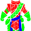 | Silent Farmer Outfit | 60 | Craft (Tailoring Workbench) |
| Work Clothes with Armband II | 60 | Craft (Tailoring Workbench) | |
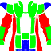 | Fashionable Work Clothes | 60 | Craft (Tailoring Workbench) |
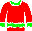 | Wild Sleepwear | 60 | Craft (Tailoring Workbench) |
Hats
100 obtainable (career hats included)
| Name | Max level | Where from | |
|---|---|---|---|
| Straw Headband | 30 | Craft (hands) | |
| Straw Hat | 45 | Craft (Workbench) | |
| Feathered Hunting Hat | 55 | Craft (Workbench) | |
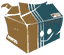 | Delivery Box | 60 | Shop (pack) |
| Mask | 60 | Shop (random box) | |
| Camo Sniper Mask | 60 | Craft (Tailoring Workbench) | |
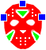 | Hockey Mask (Decorative) | 60 | Shop (random box) |
| Flame Helmet | 60 | Shop (random box) | |
| Executioner Hood | 60 | Craft (Tailoring Workbench) | |
| Melee Combat Helmet | 60 | Craft (Tailoring Workbench) | |
| Fashionable Work Hat | 60 | Craft (Tailoring Workbench) | |
| Pontificating Philosopher Mask (Decorative) | 60 | Shop (random box) | |
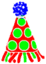 | Party Hat (Decorative) | 60 | Shop (random box) |
| Chicken Head Hat | 60 | Shop (random box) | |
| Special Gathering Hat | 60 | Shop (pack) | |
| Safety Cone Hat | 60 | Shop (random box) |
Gloves
30 obtainable
| Name | Max level | Where from | |
|---|---|---|---|
| Arm Warmers | 30 | Craft (hands) | |
| Leather Arm Warmers | 30 | Craft (hands) | |
| Fur Gloves | 45 | Craft (Workbench) | |
| Armored Gloves | 45 | Craft (Workbench) | |
| Bone Gloves | 60 | Craft (Tailoring Workbench) | |
| Winter Fur Gloves | 60 | Craft (Tailoring Workbench) | |
| Thermal Resistance Gloves | 60 | Craft (Tailoring Workbench) | |
| Towel Gloves | 60 | Craft (hands) | |
| Veteran Rubber Gloves | 60 | Craft (hands) | |
| Leather Gloves | 60 | Craft (hands) | |
| Bone Plate Gloves | 60 | Craft (Tailoring Workbench) | |
| Veteran Lotus Leaf Gloves | 60 | Craft (hands) |
Shoes
29 obtainable
| Name | Max level | Where from | |
|---|---|---|---|
| Footwraps | 30 | Craft (hands) | |
| Leaf Footwraps | 30 | Craft (hands) | |
| Wooden Shoes | 30 | Craft (Workbench) | |
| Fur Boots | 45 | Craft (Workbench) | |
| Armored Boots | 45 | Craft (Workbench) | |
| Ivory Boots | 60 | Craft (Tailoring Workbench) | |
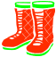 | Slash-Resistant Boots | 60 | Craft (Tailoring Workbench) |
| Towel Boots | 60 | Craft (hands) | |
| Veteran Rubber Boots | 60 | Craft (hands) | |
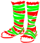 | Veteran Leather Boots | 60 | Craft (hands) |
| Lotus Leaf Boots | 60 | Craft (hands) | |
| Leaf Boots | 60 | Craft (hands) |
Bags
13 obtainable
| Name | Max level | Where from | |
|---|---|---|---|
| Coconut Canteen | 30 | Craft (hands) | |
| Bamboo Canteen | 30 | Craft (hands) | |
| Fabric Bag | 30 | Craft (Workbench) | |
| Leaf Bag | 30 | Craft (hands) | |
| Small Bag | 35 | Craft (Workbench) | |
| Horn Canteen | 45 | Craft (Workbench) | |
| Secondary Bag | 45 | Craft (Workbench) | |
| Fabric Canteen | 55 | Craft (Workbench) | |
| Waterskin Canteen | 60 | Craft (Tailoring Workbench) | |
| Cherry Blossom Bag | 60 | Craft (Workbench) | |
| Bamboo Bag | 60 | Craft (Workbench) | |
| Recycled Bag | 60 | Craft (hands) |
Modern fashion
Fashion clothing and accessories, mostly from shop packs or random boxes · clothing 44 · accessories 68
| Name | Max level | Where from | |
|---|---|---|---|
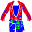 | Farmer Outfit | 35 | Craft (Workbench) |
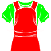 | Homemaker Outfit | 35 | Craft (Workbench) |
| Suit | 35 | Craft (Workbench) | |
| Cargo Pants (Decorative) | 60 | Shop (random box) | |
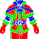 | Posh Santa Outfit | 60 | Shop (pack) |
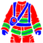 | Firefighter Outfit | 60 | Shop (random box) |
| Full Body Tights | 60 | Shop 300 Loyalty | |
| Engineer Outfit (Decorative) | 60 | Shop (random box) | |
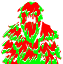 | Ghillie Suit (Decorative) | 60 | Shop (random box) |
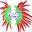 | Samba Festival Outfit | 60 | Shop (random box) |
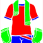 | Hot Spring Outfit | 60 | Shop (pack) |
| Chrome Tights | 60 | Shop (random box) | |
| Elephant Hat | 60 | Shop 1,200 Loyalty | |
| Police Uniform | 60 | Shop (random box) | |
| Taekwondo Uniform (Decorative) | 60 | Shop (random box) | |
| Autumn Coat | 60 | Shop (pack) |
| Name | Max level | Where from | |
|---|---|---|---|
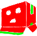 | Cardboard Box | 60 | Shop (random box) |
| Delivery Box | 60 | Shop (pack) | |
| Builder Name Tag | 60 | Shop (pack) | |
| Keffiyeh (Decorative) | 60 | Shop (random box) | |
| Mask | 60 | Shop (random box) | |
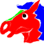 | Horse Mask | 60 | Shop (random box) |
| Hockey Mask | 60 | Shop (random box) | |
| Skull Hat | 60 | Shop (random box) | |
| Safety Helmet | 60 | Shop (random box) | |
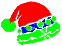 | Posh Santa Hat | 60 | Shop (pack) |
| Firefighter Helmet | 60 | Shop (random box) | |
| Party Hat | 60 | Shop (random box) | |
| Chicken Head Hat | 60 | Shop (random box) | |
| Samba Festival Headpiece (Decorative) | 60 | Shop (random box) | |
| Lady Liberty Hat | 60 | Shop (pack) | |
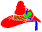 | Halloween Pumpkin Witch Hat | 60 | Shop (pack) |